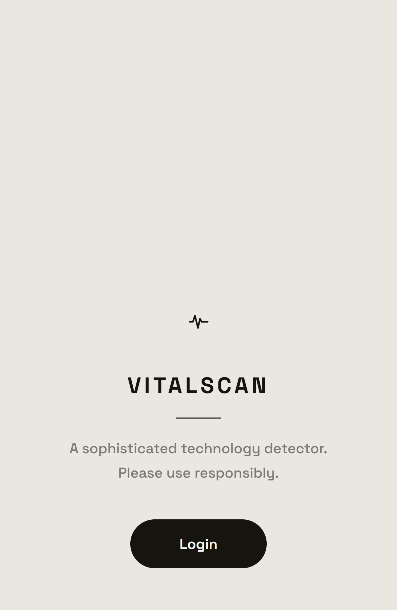
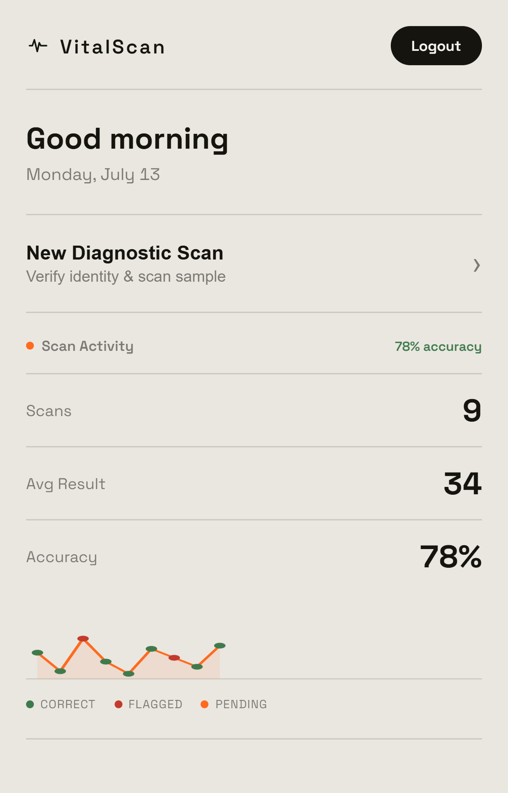
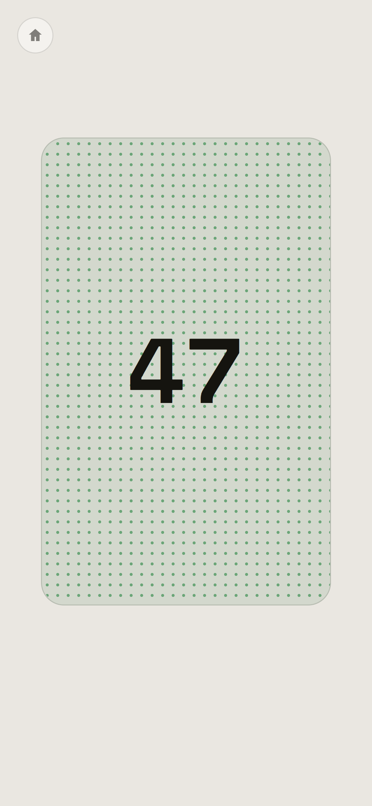
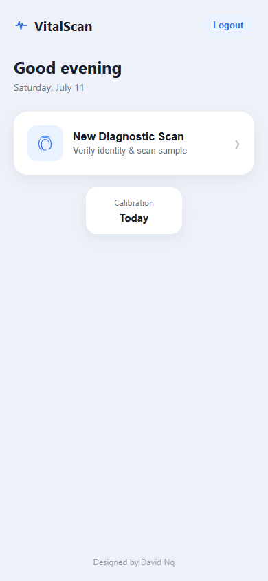
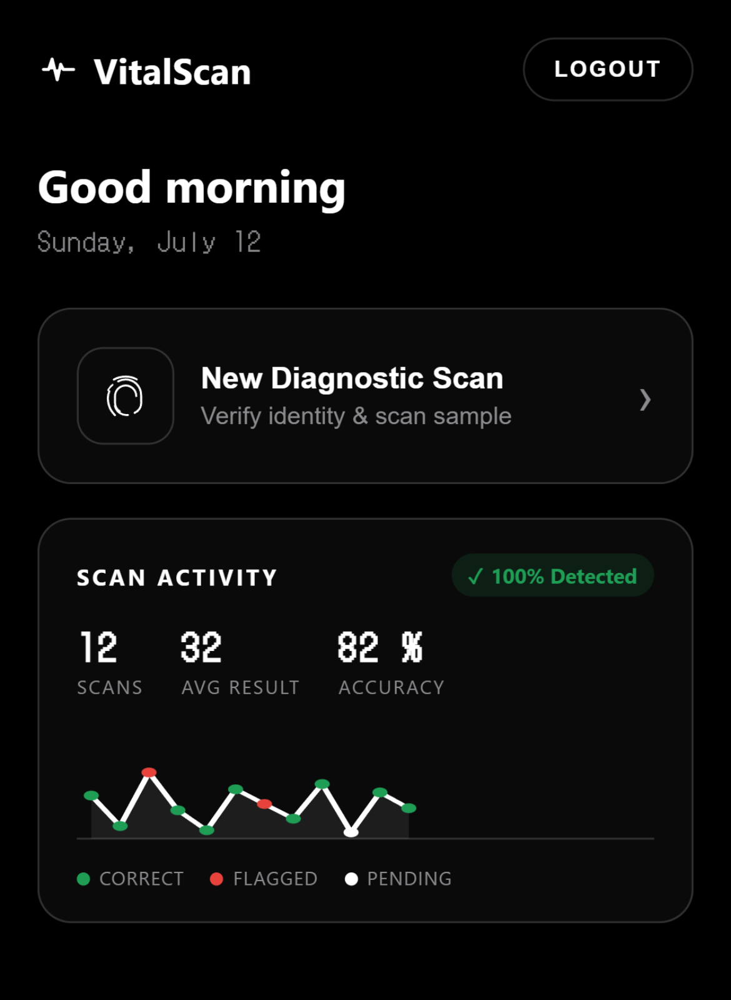
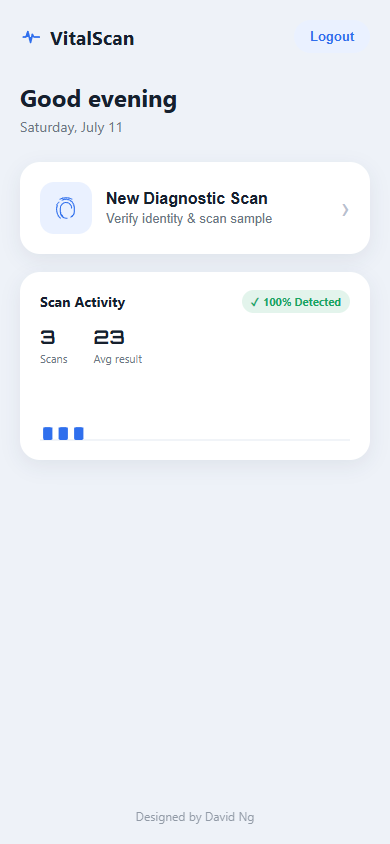
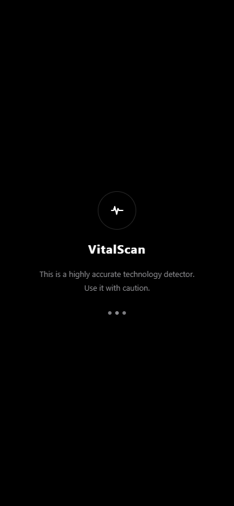

VitalScan: A Novelty Scanner App, Built by Conversation
VitalScan is a fake "biometric technology detector" for the web: a passcode lock screen, a fingerprint hold-to-scan interaction, a live scanning sequence, and a dashboard that tracks a believable history of "results" — all of it fabricated, none of it measuring anything real. It's a prank app, built to be shown off.
What makes it worth a case study isn't the prank. It's the process. Every screen, animation, sound, and interaction below was directed entirely through natural language in Claude Code, iterated live against a running build, screenshot by screenshot, without writing a line of code by hand.
A scanner that scans nothing, dressed to look like it scans everything
The premise is simple: hold your thumb on the sensor, watch it "scan," and get a result. The passcode only ever unlocks if a hidden gesture is performed first, the scan result is a random number dressed up as data, and the whole thing is styled like a confidential piece of hardware, not a joke. The goal was to make every individual screen feel considered, not just the concept as a whole.



Design direction, given entirely in plain language
There was no Figma file for this project. Every visual decision, from "shift the number pad up a bit" to "make it monochrome, like this moodboard," was written as a prompt against a live, running build. Each round followed the same loop: describe the change, let it implement, watch it get verified against a headless browser with real screenshots, then look at the result and decide what to say next.
Verification, not vibes
Every change was checked before it was called done: a headless browser actually clicked through the passcode, held the fingerprint sensor for the full three seconds, and read back computed styles and audio node counts, not just a glance at a screenshot. That discipline is what made twenty-four rounds of rapid changes possible without the build slowly rotting underneath the polish — including two full visual identity swaps that touched nearly every screen without anything quietly breaking underneath.
What changed, round by round
A selection of the iterations that shaped VitalScan the most, each one a direct response to looking at the running build and deciding it wasn't right yet.
From a clinical light theme to a monochrome moodboard
The first working version used a light, soft-blue "medical app" palette. Shown a reference moodboard of a black, dot-matrix, Nothing-OS-style interface, the entire visual system was rebuilt in one pass: pure black surfaces, thin white borders instead of drop shadows, a pixel display font for numerals, and status color reserved specifically for green and red states rather than used decoratively.

Initial Build — Light Theme

Second Pass — Monochrome Theme
Trading pure black for a warmer, considered light system
The monochrome look read as striking in isolation but flat and cold as a full app to actually use for a few minutes. The identity was rebuilt a second time, into the system running today: a warm cream paper background, a single confident orange accent used sparingly, Space Grotesk for numerals in place of the dot-matrix font, and thin low-opacity borders instead of stark white hairlines. It's the same discipline as the first redesign, applied against the lesson learned from living with it — high contrast reads as "technical," but it isn't automatically the most usable choice for a screen someone actually has to look at repeatedly.
Second Pass — Monochrome Theme
Current — Light Geometric Theme
From a bar chart to a connected line
The home dashboard's "Scan Activity" card started as a simple bar chart of past results. Asked directly to make it a line graph, the chart was rebuilt as a connected SVG path with individually colored points, so a glance can separate a genuine detection from one a user has personally flagged as wrong.

Initial Draft — Bar Chart
Current — Line Chart
Cutting a screen that had already earned its place
A splash screen with a four second auto-advancing timer was added early on, then replaced by a dedicated login screen with its own explicit button. A few rounds later, asked to "remove the loading page" outright, the splash was deleted entirely — the app now opens directly on login. Not every screen added earlier survives once a flow gets used a few more times.

Removed — Loading Splash
Current — Opens Directly on Login
A scanning grid that reports its own result
This effect went through three different versions before landing on the one running today. It started as a single static dot grid with no color feedback at all. The second pass added a ripple that swept outward from the center in orange, red, or green depending on the mode — visually busy, and it made "Detected" and "Not Detected" harder to tell apart at a glance than the status text next to them. The current version is quieter and reads faster: the scan field's own background flickers between neutral and its status color roughly twice a second, while the dot grid's color stays completely static within each mode — a muted orange-grey while scanning, solid green the instant a result reads "Detected," solid red for "Not Detected." The three tiles below are the app's actual CSS running live, not screenshots.
Scanning
Not Detected
Detected
Live CSS, not screenshots — running the exact keyframes from style.css, in the actual on-screen context (home button, status text, Scan button included).
The "scanning" state is never removed from the field once a scan starts — "detected" or "not detected" gets added alongside it, not instead of it. That meant a :nth-child() selector written for the scanning dots ended up with slightly higher CSS specificity than the plain rule meant to override it for a finished result, so a flash of the old scanning color kept bleeding through after every result came back. The fix was :where(), which matches the same elements but contributes zero specificity of its own — it let the rules go back to resolving in the order they were written, the way the cascade is supposed to work.
From a radiating ripple to an inverted blink
The "Scanning" state specifically went through its own redesign, separate from Detected and Not Detected. The version before this one rippled: a burst of color expanded outward from the center of the grid on a 1.2 second loop, the dots shifting from grey to the app's orange accent as the ripple passed over them, three overlapping waves staggered a fraction of a second apart so it never looked fully still. It looked good in isolation, but busy and slightly gimmicky sitting on-screen for the full three seconds of a scan. It was replaced with something calmer: the dot grid stays completely still, and instead the whole field's background flickers between neutral and a dim orange tint about twice a second — the same "flicker the field, not the dots" language already used for Detected and Not Detected, so all three states now read as one consistent system instead of scanning having its own separate visual idea.
Removed — Grey → Orange Ripple
Current — Inverted Blink
Both live CSS. The ripple is reconstructed from the exact keyframes in the commit right before it was replaced, not a re-creation from memory.
From a hard snap to a number that counts itself up
The result number originally flickered through random digits for a moment, then snapped straight to the real value. It now flickers for three seconds — the "calculating" state — before counting up from zero to the actual result over five seconds, slowing down as it approaches the number, an easing curve chosen specifically so the count feels like it is arriving at an answer rather than just stopping.
The deceleration wasn't just visual. The tick sound that accompanies each digit change during the count-up naturally spaces out as the animation slows, because the sound is triggered by the same value-change event as the visual update. One easing curve, two senses, no separate audio timeline to keep in sync by hand.
A passcode that isn't really a passcode
The core trick: the six-digit passcode never validates against a stored code at all. It unlocks only when it ends in a specific pair of digits — currently 1 and 9 — with no visual cue that those two positions mean anything different from the other four. End it with anything else and the dots shake and reset, no matter what came before. The digits that do "pass" aren't wasted either: the first digit sets how many times the scan will read "Not Detected" before it finally succeeds, and the second and third become the two-digit number it reports once it does.
Three mechanics, each hidden a different way
The secret gate was rebuilt twice before landing here. It started as an invisible zone on the lock screen that had to be double-tapped before the passcode would validate — first a small, easy-to-miss 110×110 pixel target in the corner, later a full-width band that was easier to stumble into. That was replaced with a single press-and-hold of about two seconds in the same spot, with a small haptic buzz on trigger. Both versions had the same weakness: they were a separate gesture, on top of the passcode, that a curious user could eventually locate by methodically tapping and holding around the screen. Folding the check directly into the passcode's own last two digits removes that surface entirely — there is no hidden zone left to find, because the only "secret" is which digits a normal-looking passcode has to end in.
Fixing the parts that weren't the trick
Alongside the mechanic itself, two ordinary usability issues surfaced during testing on actual mobile viewports and needed fixing on their own merit: buttons weren't showing a press state reliably on mobile Safari, since CSS :active alone doesn't fire consistently on a plain tap, and the bottom of the keypad was getting cropped on shorter phone screens because of how mobile browsers report viewport height.
- Replaced CSS :active styling with a small Pointer Events driven .pressed class, so every button gets identical tactile feedback on mouse and touch alike.
- Switched the app's height to 100dvh, the dynamic viewport unit, with a fallback for older browsers, so mobile browser chrome no longer clips content off the bottom of the screen.
- Tightened the lock screen's vertical spacing so the full keypad, including the 0 and delete keys, stays visible on screens as small as 360×640.
Every sound is generated, not recorded
There isn't a single audio file in the project. Every tone — the scanning pings, the detected and not-detected chimes, the calculating ticks, the decelerating count-up — is synthesized on the fly with the Web Audio API: plain oscillators shaped by short gain envelopes, composed into short chime sequences for the more celebratory moments.
Subtracting as much as adding
Sound was added broadly at first, including a continuous rising tone that played for the full three seconds a user held their thumb on the sensor. On review, that tone was pulled entirely — holding the sensor is now silent — while the short completion chime once verification succeeds was kept. Iteration on a build like this isn't only about adding detail; knowing what to remove again is just as much a part of the process.
No asset pipeline, no licensing to think about, and no network requests: the entire app, sound included, is three text files that load instantly and work offline. For a small interactive prototype like this, that trade-off was worth more than the extra realism a sampled sound library might have added.
What this project actually demonstrates
Summary
VitalScan is not a client deliverable, and it doesn't pretend to solve a real problem. What it demonstrates is a working method: the same "look at it, react, adjust" loop used with a physical prototype or a Figma file applies just as directly to a live, running piece of software, when the iteration loop is fast enough to keep up with the reaction. Twenty-four rounds of direction, each one verified for real before it counted as done — including reworking the entire visual identity twice — produced a small app with a genuine identity, its own sound design, and interaction details most prototypes never get far enough to include.
What Comes Next
- A proper deployment behind a real domain, rather than a local build, so the prank version is actually shareable.
- Device-level haptics on the hold-to-scan interaction, where the platform supports it, to close the gap between the visual and physical feedback.
- A richer fake "diagnostic report" behind each result, giving the joke more to say once someone has actually been fooled by it.